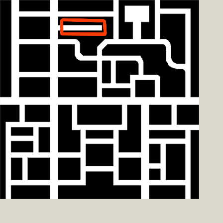
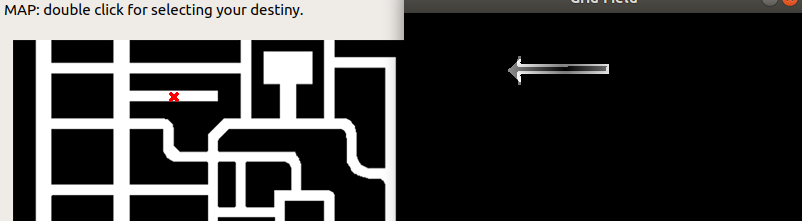

In the previous post, we talked about the various Global Navigation Algorithms that could be used to solve the JdeRobot exercise on Global Navigation. This post focuses on the implementation part of the algorithms, that were discussed.
Let’s start with the general Breadth First Search algorithm. Once we know about BFS, then we can apply various comparision algorithms on it, and evaluate their performance!
Breadth First Search
Breadth First Search is a traversal algorithm, used for scanning a graph. It starts at any arbitrary node of the graph, and explores all the nearest neighbors at the present depth prior to moving onto the next depth level. Applying it on a grid, is quite similar. Considering the grid as a graph, the nodes of the graph correspond to the cells and the neighboring cells(nodes) are connected by edges. In this way the BFS algorithm, could be visualized as a Wave Front or a Fire propagating from a point, outwards in case of a grid.

Enter the data structure: Graph
Many problems can be solved using this algorithm, finding connected components, shortest path out of a maze, testing bipartiteness of a graph, to name a few. In our case we use it to get the next cell, which is to be processed. Here is the implementation of BFS on grid!
def generate_path():
#8 nearest neighbors
neighbors = [[1, 0], [-1, 0], [0, 1], [0, -1], [1, 1], [1, -1], [-1, 1], [-1, -1]]
#Get the Binary Map Image
mapIm = self.grid.getMap()
#Get the destination
dest = self.grid.getDestiny()
#Get the current position
gridPos = self.grid.getPose()
#Queue
grids = []
#visited array
visited = []
#0 cost for destination node and it's neighbors
for i in range(8):
neighbor = [neighbors[i][0]+dest[0], neighbors[i][1]+dest[1]]
grids.append([0, neighbor[0], neighbor[1]])
self.grid.setVal(dest[0], dest[1], 4)
visited.append([dest[0], dest[1]])
while(len(grids) != 0):
c = grids.pop(0)
#Check and mark as visited
if([c[1], c[2]] in visited):
continue
visited.append([c[1], c[2]])
#Check for compeletion
#c[1] is for gridX and c[2] for gridY
if(c[1] == gridPos[0] and c[2] == gridPos[1]):
point = self.grid.getVal(c[1], c[2])
self.grid.setVal(c[1], c[2], point+1)
break
#point is the value of grid point whose neighbors are to be checked
point = self.grid.getVal(c[1], c[2])
minimum = float('inf')
which = 0
for i in range(8):
#the neighbor
neighbor = [c[1] + neighbors[i][0], c[2] + neighbors[i][1]]
#Check neighbor for out of bounds
if(neighbor[0] < 0 or neighbor[0] >= 400 or neighbor[1] < 0 or neighbor[1] >= 400):
continue
#value is used to determine if it's an obstacle
value = mapIm[neighbor[1], neighbor[0]]
#point1 is the current value of the neighbor
point1 = self.grid.getVal(neighbor[0], neighbor[1])
#if value == 0, then it is an obstacle, continue
if(value == 0):
continue
#if not obstacle
#and push; if not visited
self.grid.setVal(neighbor[0], neighbor[1], comparision_algorithm())
if(neighbor not in visited):
grids.append([point1, neighbor[0], neighbor[1]])
The algorithm, will get us the next cell based on our metric.
Let’s discuss the metrics now!
Euclidean Distance
The euclidean distance metric is really simple to implement and understand. All we have to do is to get the coordinate based distance between two points.
def euclidean_distance(point1, point2):
value = (point1[0] - point2[0])**2 + (point1[1] - point2[1])**2
return math.sqrt(value)
But, as discussed previously there is a drawback with this algorithm. The algorithm will fail at this location!

The location marked in red fails the algorithm
While getting the cell with lowest euclidean distance, the algorithm doesn’t want to risk taking a value little larger than required, to reach it’s goal. Therefore, the alogrithm gets stuck in a loop or terminates, when it can’t go any further!
Going a little deeper and tweaking the details a little bit, we can get the algorithm to get out of the loop, but we won’t be able to navigate through it, see the illustration to clear the point!

The algorithm can never tell which point was called for in this region
So this doesn’t seem to work, we have another plan as well!

We have one more algorithm
Wave Front Algorithm
Using this algorithm, we can implement a brute force breadth first search, that scans almost the complete grid and gets an answer(path) to our query. The metric used in this algorithm, is the value assigned to each cell in the grid. The minimum value is chosen and as the next cell. Simply put,
def value_metric(value, minimum, lowest, running):
if(value <= minimum):
lowest = [running[0], running[1]]
minimum = value
return lowest
This takes time, but does it’s job really well in our case. The above algorithm would be enough, if we want to traverse through an obstacle free grid. To deal with obstacles, we need to add certain definite values to the cells near obstacles, therby creating a potential wall, which is difficult to climb for the navigation algorithm.
#Define the matrix that needs to be added
obs_weight = [[150, 150, 150, 150, 150, 150, 150], [150, 145, 145, 145, 145, 145, 150], [150, 145, 140, 140, 140, 145, 150], [150, 145, 140, 0, 140, 145, 150], [150, 145, 140, 140, 140, 145, 150], [150, 145, 145, 145, 145, 145, 150], [150, 150, 150, 150, 150, 150, 150]]
visited = []
for obs in obstacle:
#The cells within the given range are to be incremented
for i in range(-3, 4):
for j in range(-3, 4):
n = [obs[0]+i, obs[1]+j]
#Check for any out of bounds
if(n[0] < 0 or n[0] >= 400 or n[1] < 0 or n[1] >= 400):
continue
#Should not be visited
if(n in visited):
continue
#Should not be an obstacle already
if(isobstacle(n)):
continue
point = self.grid.getVal(n[0], n[1])
self.grid.setVal(n[0], n[1], point+obs_weight[i][j])
#We need to add the value only once, every obstacle
visited.append([n[0], n[1]])
Once, the path is generated, it is time to navigate through it!

Onto Navigation
Navigation
The navigation is quite simple, compared to the path generation. Apart from low level details, like setting the speed, checking if the obstacle reached, the task is relatively easier. We have to select the next 2 cells which we are to go through and take their interpolation considering them of equal weights. There are 2 points to take note of,
-
Selection of next point: The selection of next point, should be done from a neighborhood of points, and not just the 8 neighbors. In other words, select a point from a larger radius of vicinity, otherwise our navigating algorithm, fails to get the next minimum point, and just passes through!
-
Interpolation: The interpolation weights are adjustable. Even selecting 3 points works well!
Once these hyperparameters are set, the rest is left to simulation, what suits our task best! Here is a brief code,
def getnexttarget():
#Current Position
gridPose = self.grid.getPose()
#Destination
dest = self.grid.getDestiny()
#First target
targetImage = self.getnextcell(gridPose, dest)
target = self.grid.gridToWorld(targetImage[0], targetImage[1])
#Second target corresponding to our First target
targetNextImage = self.getnextcell(targetImage, dest)
targetNext = self.grid.gridToWorld(targetNextImage[0], targetNextImage[1])
#Interpolation
targetInterpolationx = (target[0] + targetNext[0])/2
targetInterpolationy = (target[1] + targetNext[1])/2
self.target = self.grid.worldToGrid(targetInterpolationx, targetInterpolationy)
#self.prev = self.target
#self.prev = targetImage
print "\n\nTARGET INTERPOLATION: " + str(self.target)
def getnextcell():
#Current cell
curr = [pose[0], pose[1]]
lowest = [pose[0], pose[1]]
#Minimum value
minimum = self.grid.getVal(pose[0], pose[1])
self.visited.append(curr)
#A radius of 6
for i in range(-3, 4):
for j in range(-3, 4):
running = [curr[0]+i, curr[1]+j]
#Check for out of bounds
if(running[0]<0 or running[0]>=400 or running[1]<0 or running[1]>=400):
continue
if(running in self.visited):
continue
value = self.grid.getVal(running[0], running[1])
#If not obstacle
if(value != 0):
if(value < minimum):
lowest = [running[0], running[1]]
minimum = value
self.visited.append(lowest)
return lowest
One really interesting point to note above. I used lowest = [pose[0], pose[1]] instead of using curr = lowest. There is a very cool reason behind it! While copying values from a variable to another, python uses reference when copying the array variable. Hence the variable for an array actually represents the reference to the first element of the array and not it’s value. Therefore, in the future whenever we make a change to the array lowest, that same change will be reflected in the curr array, which we do not require! Hence, justifying the above code. Read more about this here.
So, this it it! This is how you implement the Wave Front Algorithm to navigate through small mazes, that are computationally not that complex!